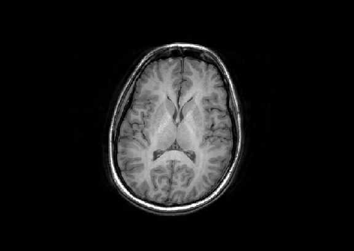

Bridging the Gap
Crossing the Translational Divide
Crossing the Translational Divide

Brain Mapping
Route Mapping
Dr. Love is a neuroscientist who has spent her career exploring mechanisms that have gone awry, in the brain and in the ways science reaches those who need it most. In the laboratory, she explores the mechanisms that confer risk to develop psychiatric disorders. In the field, she focuses on finding ways to translate scientific discovery into clinical practice.
She's a technophile, but on her days off, you'll probably find her backpacking far off the grid away from her beloved machines.